DevOps 的打开方式: 构建和部署

通过使用 Serverless Jenkins（Jenkins X）为企业在一个实时的云原生项目上通过使用 Kubernetes CI/CD 方法进行构建&部署。
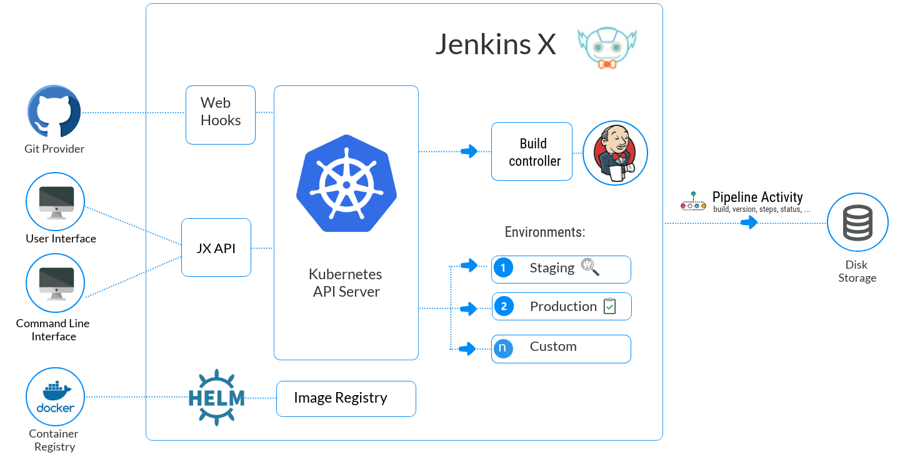
新时期 DevOps 的变革是在专注于作为敏捷协议的一个扩展并且同敏捷协同合作的过程中让开发者、IT 运维、质量保障和业务一道朝着共同的目标让项目更快更好的进行。受竞争日益激烈的市场驱动着，企业需要通过软件传递价值，造就了速度成为了如今软件开发的新规范。拥有正确的企业文化、工具、流程以及 DevOps 最佳实践对加快和提升软件产出的速度至关重要。如今，我们需要为在云、容器、服务网格、微服务、不变的基础架构以及声明性 API 上运行的 Kubernetes 上重新构想 CI/CD。嗯，Jenkins X 就是那款产品；它提供了一种在 Kubernetes 上运行 CI/CD 流水线的方法。Jenkins X 作为一个平台在开发者那里隐藏了 Kubernetes 的复杂性。开发者可以专注于编出高质量的代码和优秀的用户体验而不需要为 Kubernetes 的复杂性大费脑筋。
这是正确打开 DevOps 的博客的系列第二部分。在之前的那篇博客中，主要讨论了文化、计划和设计。我当时指出“DevOps 是一个结果为导向支持敏捷的实践。”现在依然是这样的。
这篇博客中，我将会通过在 Kubernetes 上为云原生应用程序使用最新的 CI/CD 工具也就是 Jenkins X 专注于从运行层面讲解 DevOps。我将会解释基本的概念然后通过构建一条流水线来将理论与实践关联，然后带你学习第一次接触 Jenkins X 需要学习的步骤有哪些。对你来说重要的是理解构建的模块以及为什么它是云原生应用的完美选择。操作说明将会一步步引导你学习 Jenkins X 并会为你提供入门指南。
Jenkins X 是革命性的具有改变现代应用程序与客户交互的潜力。它或许会影响下一代的开发以及部署，类似于 Docker 对不可变容器镜像和 Kubernetes 对容器服务编排的影响那样。
Serverless CI/CD 流水线
Jenkins X 是一款在 Kubernetes 上运行的 CI/CD 流水线，一种部署临时流水线的新方法也被叫做无服务器的流水线。它是 Tekton Pipelines 项目的一部分旨在为声明 CI/CD 类型的流水线提供 Kubernetes 形式的资源。
使用 Jenkins X 的现代应用程序部署方式
Jenkins X *“一个云原生版本的 Jenkins，可以叫做 Jenkins 的酷表亲”*，是一款开源项目为在 Kubernetes 上的云原生应用程序提供了自动化的 CI/CD。Jenkins X 提供了自动化流水线，内置 GitOps，预览环境可以帮助团队合作以及加快以任何规模交付他们软件的速度。它会让所有事物更直接，通过使用开源工具比如 Helm、Skaffold、Monocular、ChartMuseum、Nexus、KSync 以及 Docker Registry 快速构建云原生应用程序可以让你使用 Jenkins 2.0 的强大功能进行操作。
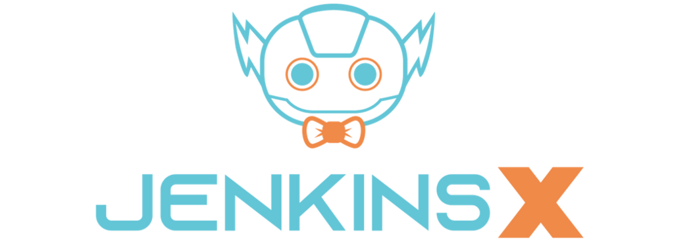
Jenkins X 的主要功能
维护带有 CI/CD 的各种组件的特定服务器
自动化持续集成（CI）与持续交付（CD）工具
自动化环境管理
自动化预览环境
与微服务开发和发布流程天然集成
问题与拉取请求反馈
管理环境间的升级（测试-过度-升级）
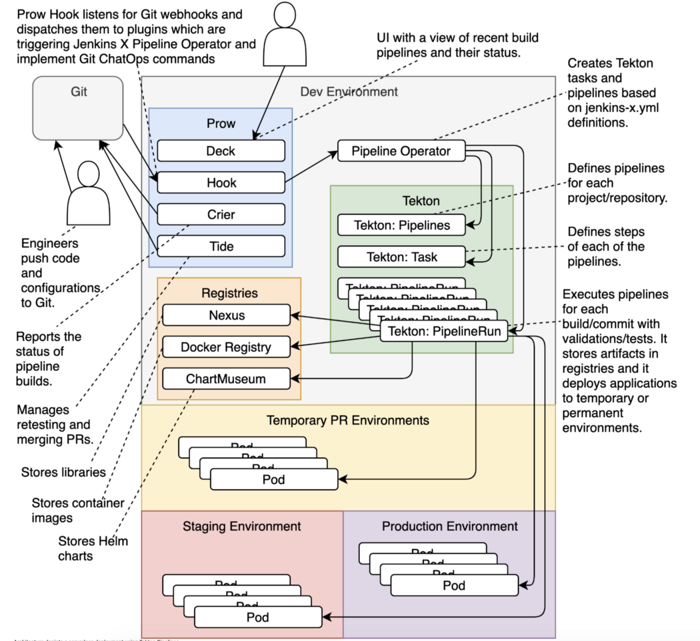
Jenkins X-构建模块
Jenkins: CI/CD 自动化服务器
Helm: Chart 形式的包管理器
Skaffold: 在流水线中执行构建以及推送镜像动作
Nexus: 为 Node Js & Java 应用程序提供独立缓存以及产物存储
Docker Registry: 容器镜像仓库（Docker 镜像存储）
ChartMuseum: 用于发布 Helm Chart 的仓库（开源的 Helm Chart 仓库）
Monocular: 提供发现与运行 Helm Charts 的 UI
Prow: 通过 webhooks 接收的 GitHub 事件的事件处理器
Tekton: Kubernetes 内流水线管理器
GitOps: 管理环境间的升级
Kubernetes
Kubernetes 正在发展中，但事实上，它已经成为了安装、升级、操作和管理容器化应用程序的方式的标准。它是一个容器编排平台用于在任何公有云和混合云上调度和自动化容器化应用程序的部署、管理和扩展。它得到了众多云服务提供商（CSP）的支持，比如 IBM、Google、Microsoft 以及 AWS。每一个 CSP 均提供了其对应的名称:
IBM Kubernetes Service（IKS）
Google Kubernetes Engine（GKE）
Azure Kubernetes Service（AKS）
Amazon Elastic Container Service for Kubernetes（Amazon EKS）
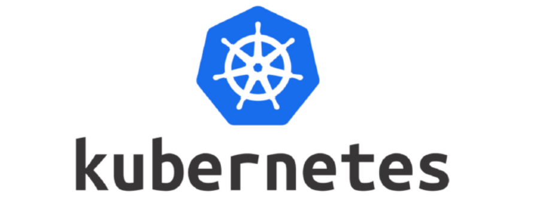
Kubernetes 拥有 Cloud Native Computing Foundation（CNCF）的支持，并且在云原生计算基础架构平台的市场中占有相当的份额；它同样是 CI/CD 流水线的一部分。可以在一个平台上运行云原生或者传统应用程序。以下是一些开箱即用（OOTB）的功能:
网络
持续性
服务发现
滚动升级
弹性集群
资源请求/限制
容器调度
容器编排
扩展
容器探针
使用命令、控制台或者自动扩缩容
独立的凭据配置管理
自我恢复
管理负载以及批处理执行情况
渐进式应用程序部署
什么是 Helm？
Helm 是一个类似 Linux 发行版（操作系统）的 yum 和 apt-get 那种的包管理器。简单来讲，Helm 可以帮助你管理在 Kubernetes 上部署的应用程序。它是一个 Kubernetes 组件的模板工具，也就意味着这些都只是 Kubernetes 的 YAMLs 然后使用一些工具帮助安装、组织、发现、共享、管理应用程序。Helm 打包应用程序使用的格式称为 Chart。一个 Helm Chart 是多个文件的组合用来描述一组相关的 Kubernetes 资源。Helm 有两部分，命令行工具（CLI）“客户端”和一个称为 “Tiller”的服务端，它会接收请求从而在 Kubernetes 集群上使用一条命令安装对应的安装包。
什么是 Tekton？
Tekton 是一组共享的开源组件用来构建 CI/CD 系统可以让你在 Kubernetes 上构建、测试、部署应用。它的目标是通过一个无关供应商的开源基金会为 CI/CD 流水线、工作流以及其他构建模块提供行业规范，通过持续交付控制面板现代化将软件部署的大脑迁移到 Kubernetes 上。
Tekton 起源于 Knative Build 组件，2018 年 8 月份迁移至一个独立的仓库（这是相对较新的）。它只专注在 Kubernetes 上由扩展的 Kubernetes APIs 即 Kubernetes Custom Resource Definition（CRDs）定义。
安装 Tekton 到你的集群中会引入 4 种自定义的资源，它们将会被添加到你的 Kubernetes 集群中: Tasks、Pipelines、TaskRuns、PipelineRuns 以及 PipelineResources。
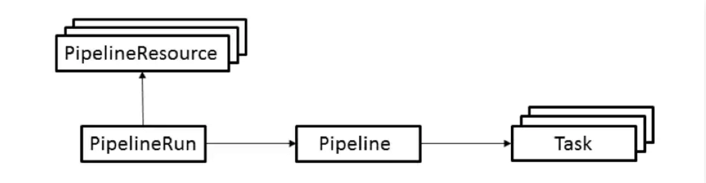
Task: 定义一组构建步骤，比如编译、运行测试、构建部署镜像。
Pipeline: 定义组成一个流水线的任务集。
PipelineResource: 定义一个对象作为流水线的输入（比如 Git 仓库）输出（比如 Docker 镜像）。
PipelineRun: 定义流水线的运行。该资源引用要运行的流水线以及使用哪一个 PipelineResource（s） 作为输入输出。
什么是 Prow？
Prow 是一个应用程序集用来与 Git 事件进行交互以及计划构建引擎。组件包括一个可伸缩的 webhook 事件处理器、自动拉取请求合并以及许多提升研发体验的插件。Prow 以强制策略、通过 /hook 类型命令进行交互以及自动 PR（Pull Request）合并的方式实现 GitHub 自动化。
什么是 GitOps？
GitOps 是源码控制管理（SCM）与起源自 Git 的 IT 运营两者的组合，“一个分布式版本控制系统用来跟踪软件开发过程中的代码变更。” Ops 表示 IT 运营，它与基础设施即代码（Iac）相关解决的是基础架构、存储、开发流水线、安全以及其他。凭借 Git 的成功，Git *实际上*成为了众多公司运营的自动化工具。GitOps 建立在 DevOps 之上而 Git 是整个系统单一的事实来源，它也是一种操作模型，通过版本控制系统的提交管理基础架构的变更包括应用程序部署。
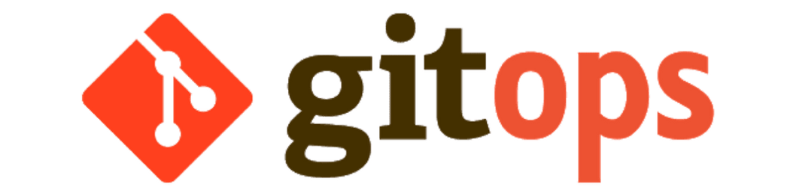
GitOps 意味着开发到部署的整个阶段使用 Git；它同样可以作为使用 Kubernetes 进行云原生实施、管理、监控等操作模型的最佳实践。
IaC 可以认为是通过编写代码以描述基础架构，类似于用高级语言编写程序；它带来了很多好处，最重要的一个就是动态基础架构，资源可以很容易的被创建、销毁、替换、调整大小、移动。GitOps 是自动化与基础设施即代码之间一个很聪明的结合。
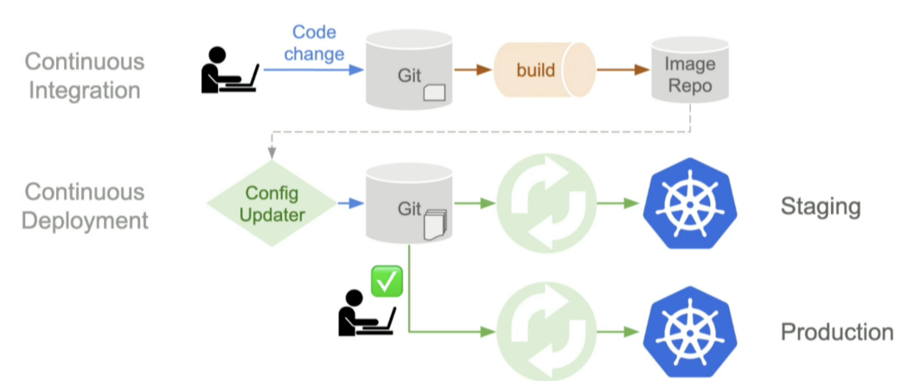
GitOps 提供了如下好处：
提高生产力
提升了开发者体验
提高稳定性
更高的可靠性
一致性与标准化
更强的安全保障
把它们组合到一起
Jenkins X 通过移除 Kubernetes 应用程序中设计 CI/CD 的复杂性从而将这些创建一个高效 CI/CD 流水线所需的部分组合到一起。通过大量的自动化、工具、DevOps 最佳实践、开源项目比如 GitOps、Jenkins、Helm、Tekton、Skaffold、Monocular、CHartMuseum、Nexus、Ksync 和 Pow，将这些组合成一个易于使用的 Kubernetes CD 平台。
该 demo 你需要使用到这些工具:
Kubernetes 1.8+ 允许基于角色的访问控制（RBAC）
在你的本机上安装
kubectl命令行配置连接到你的集群。你可以通过官方文档了解更多安装kubectl的细节。在本机上使用
helm命令行，在 K8s 上使用的包管理器。在 Jenkins X 2.xx 版本上安装 Helm 目前在 3.xx 上并不支持。git安装 Git
将它们组合到一起:
行程的第一步基于你的操作系统下载安装 jx 命令行工具
创建一个访问(https://github.com/settings/tokens/new?scopes=repo,read:user,read:org,user:email,write:repo_hook,delete_repoGitHub) 的 GitHub Access Token，设置一个名字将其存放在一个安全的地方。在安装过程中会使用它。
Jenkins X 前提是存在 Kubernetes 集群，创建一个集群相对直接一些，在它们的网站上也很好的文档化了。
在已存在的 Kubernetes 集群上安装 Jenkins X 之后，你会有下图这样的结构:
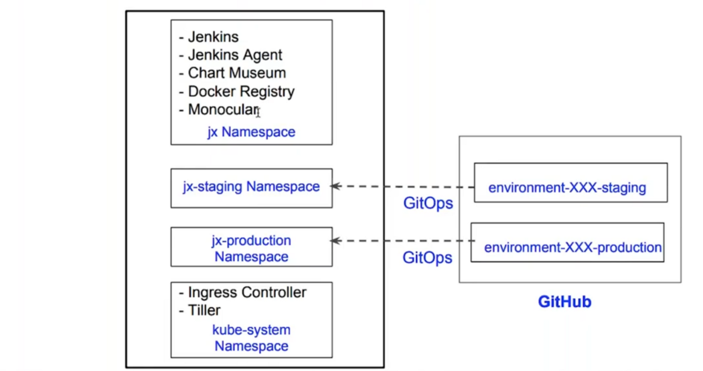
在 Jenkins X 上创建一个应用程序
1- 创建一个 demo 应用程序
a) 从 https://github.com/ernesen/apiconnectthreeofthree 或其他仓库中 fork 一份到本地
b) 克隆该仓库 git clone https://github.com/$USERNAME/apiconnectthreeofthree 或者其他你喜欢的仓库。
c) 变更目录 cd apiconnectthreeofthree
d) 使用命令 jx import apiconnectthreeofthree 将存在的项目导入到 Jenkins:
2- Jenkins X 会为该应用程序创建一个 0.0.1 的版本号然后将其升级到准生产环境；每次拉取请求都会创建它的临时预览环境。
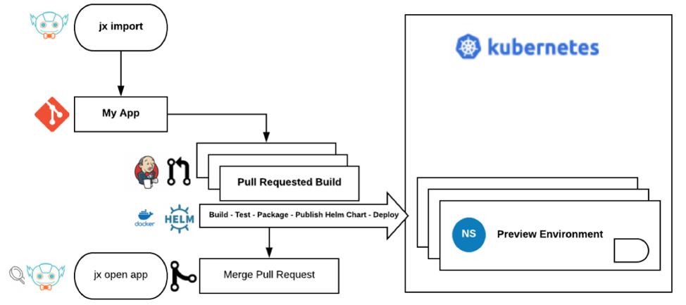
3- 应用程序创建一次变更（编辑引导页面）创建一个 PR 到主干分支；现在我们的应用就部署到一个预览环境中了。
4- Jenkins X 将会创建一个预览环境将会在你的云提供商中触发一个扩展事件为你要部署的应用程序添加另一个 K8s 节点；使用这个环境在将应用程序推出到生产环境之前预览你的应用程序。
5- 批准的 PR 将带有 “approved” 标签-Prow 会自动合并该 PR 并将其变更到准生产环境。它将自动触发升级到准生产环境的动作，从而生成新版本的应用程序:
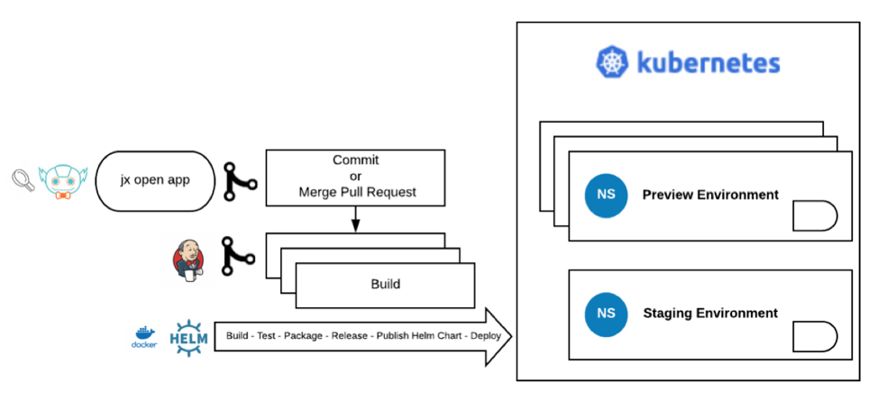
6- 最后，我们为生产环境做准备！
a) 手动使用 jx promote prod 命令。
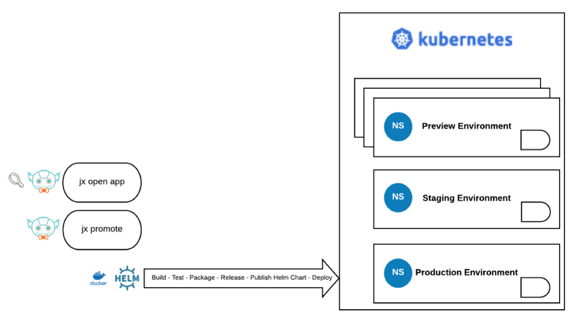
假如你已经掌握了从准生产升级到生产环境的拉取请求步骤，这里就只快速过一遍，没有任何具体细节。
总结
市场上涌现出众多的 CI/CD 工具这是一个令人激动的时代。近年来选择一款合适的工具成为了团队一项头疼的事情。DevOps 和微服务架构能够让团队更高效，交付项目时也能作为替代传统研发架构的方案。以其更快的应用程序交付速度使得微服务被更多的采用。
希望这篇文章能够引起你的注意并能传递出我想表达的观点。目的是至少能让你了解 Serverless Jenkins 与 Kubernetes 的持续集成和交付是如何解决如今基于微服务架构以及底层云基础设施构建发布流程云应用程序问题的。Jenkins X 可以帮助自动为你的拉取请求创建预览环境，所以你可以在变更合并到主干分支以及将变更从一个环境迁移到另一个环境之前更快的得到反馈。
遵循这些原则，希望能增加你对 Serverless Jenkins 的基本知识以及开发速度的兴趣，通过消除持续交付的障碍在变更管理时更有信心从而改善你的 CI/CD 流水线，“自我提升更近一步”。
致谢
特别感谢来自 IBM Garage 市场和交流部的 Amy Xin 对发布前初稿做的审校。同样感谢 IBM Garage 新加坡开发团队: Enrique（Ike）Relucio、Ernest Jason C Calalang、Jaren Lim 和 Richard Chengbin Yan 他们帮助我对这些实践进行了验证。
参考链接
这里提供了关于使用 Serverless Jenkins（Jenkins X）、GitOps、Tekton、DevOps 以及 CI/CD 更多的细节。请参考下面的链接你可以从中学习到一些可以快速掌握的核心概念而不需要花费数月去搞清楚“做某件事的正确方法”: